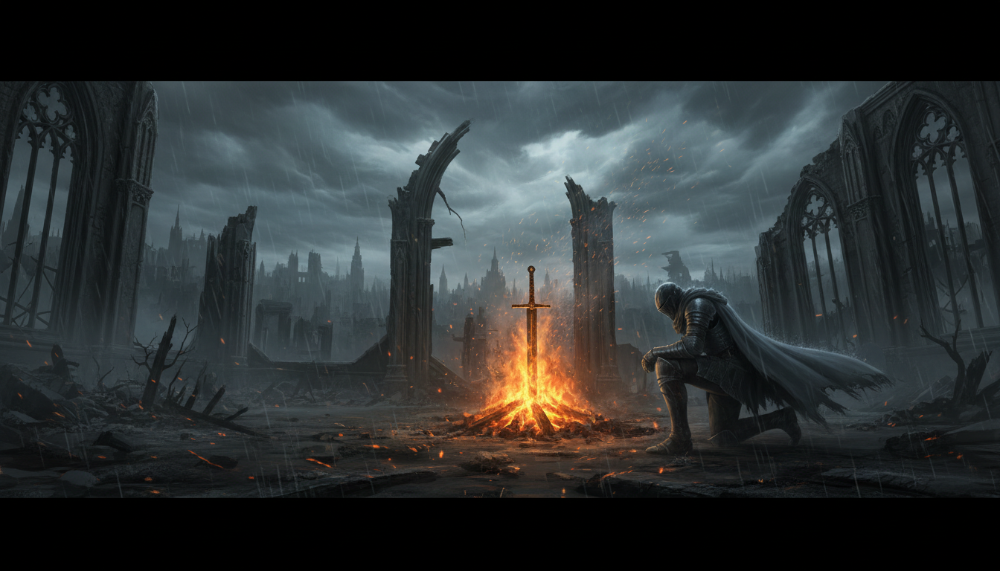

La culminación de un legado de fuego
Dark Souls III representa el cierre épico de una saga que cambió la industria. Con un combate mucho más ágil y visceral, nos lleva a un mundo que literalmente se está colapsando sobre sí mismo. Las tierras de los Señores de la Ceniza convergen en un paisaje de belleza trágica, donde cada rincón respira nostalgia y despedida.
Desde el Cementerio de Ceniza hasta el Horno de la Primera Llama, el viaje es una prueba de habilidad constante. Los jefes finales de esta entrega son coreografías perfectas de ritmo y tensión. Como apasionado de los videojuegos desde los 6 años, encuentro en este cierre la perfección técnica del género Soulslike.
Es un recordatorio de que, aunque el fuego se apague, las historias de quienes lo mantuvieron vivo perdurarán en cada rincón de este mundo ceniciento.
